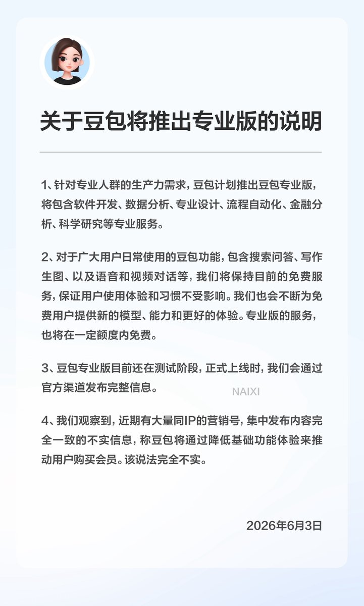

关于豆包即将推出专业版的说明
一、针对专业人群的生产力需求，豆包计划推出豆包专业版，将包含软件开发、数据分析、专业设计、流程自动化、金融分析、科学研究等专业服务。
二、对于广大用户日常使用的豆包功能，包含搜索问答、写作生图、以及语音和视频对话等，我们将保持目前的免费服务，保证用户使用体验和习惯不受影响。我们也会不断为免费用户提供新的模型、能力和更好的体验。专业版的服务，也将在一定额度内免费。
三、豆包专业版目前还在测试阶段，正式上线时，我们会通过官方渠道发布完整信息。
四、我们观察到，近期有大量同IP的营销号，集中发布内容完全一致的不实信息，称豆包将通过降低基础功能体验来推动用户购买会员。该说法完全不实。
一、针对专业人群的生产力需求，豆包计划推出豆包专业版，将包含软件开发、数据分析、专业设计、流程自动化、金融分析、科学研究等专业服务。
二、对于广大用户日常使用的豆包功能，包含搜索问答、写作生图、以及语音和视频对话等，我们将保持目前的免费服务，保证用户使用体验和习惯不受影响。我们也会不断为免费用户提供新的模型、能力和更好的体验。专业版的服务，也将在一定额度内免费。
三、豆包专业版目前还在测试阶段，正式上线时，我们会通过官方渠道发布完整信息。
四、我们观察到，近期有大量同IP的营销号，集中发布内容完全一致的不实信息，称豆包将通过降低基础功能体验来推动用户购买会员。该说法完全不实。
